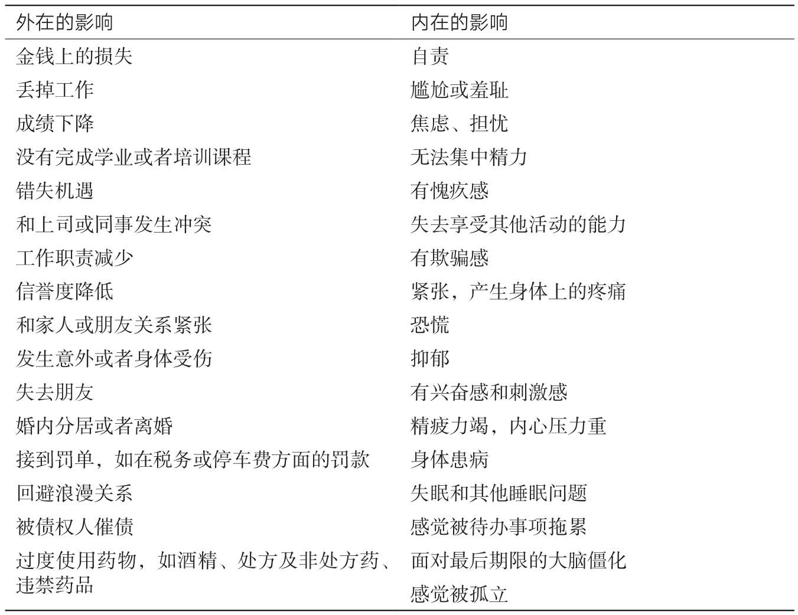

控制拖延的关键是对你的拖延方式进行清查。虽然大多数拖延者都习惯了拖延，但他们平时并不会多想，他们想的只是怎样把它清除掉。如果以旁观者的身份来观察自己，你就会对自己的拖延问题有更多的了解：不需要评判，只需要去盘点，以便更清楚地觉察到自己的拖延心理和言行。
想一想你拖延的那些时刻，它可能发生在2个小时之前，也可能发生在两年之前；它或许是灾难性的，也可能对别人而言无足轻重。有时表面上正常的情况可能会对你造成很大的打击，下面就是几个这样的故事。
在最初截稿日期到来的两年后，我们终于写完了本书第1版并准备交给出版社。一位编辑从波士顿赶到伯克利，我们一起去吃午饭庆祝。午饭之后，编辑叫了一辆到机场的出租车，我和简就走向简停车的地方。但是，车不在那儿。起初，简的脑海中闪过一个恐怖的念头：车被偷了。接着，简难受地意识到车很可能被拖车拖走了，于是她一屁股坐到路边，一阵茫然，不知所措。事情不是她的车被拖走这么简单，她还意识到了两个可能的原因：她有一堆没付的停车费账单，而且她的车的年检已经过期了。这样的讽刺令人难以承受——这件事就发生在庆祝《拖延心理学》完稿的这一天！真够受的，所有的兴奋、喜悦与轻松在转眼之间被一扫而光，取而代之的是自责和羞耻。
读研的时候，莱诺拉一时冲动为自己在旧金山的狭小公寓买了一台录音机。刚把录音机带回家，她的朋友丽基就打电话说可以花更少的钱搞到一台质量更好的。谁能抵御这样的诱惑呢？就这样，丽基将那台更好的录音机带了过来，并帮莱诺拉安装好。一切都很顺利，除了莱诺拉自己买的那台录音机还原封不动地放在门边。莱诺拉当然想把它退掉，但一晃7天的退货期就已经过了，接着，14天的换货期也过了。她一直没有时间——在退换机器之前，她必须到图书馆查阅《消费者报告》杂志才能知道该换什么产品（那时没有电脑，也没有网络）；接着，她还需要一整天的时间才能把机器连带包装一起退回商店，谁会有那么多时间呢？
一个月、两个月、三个月过去了，每次进出公寓，莱诺拉都会看到那个放在门边没有被打开并且等着被送走的盒子。莱诺拉听到一个越来越严厉的声音在训斥自己：“你不会有什么毛病吧？为什么连这么简单的事都做不到？”表面上看，退换录音机是一件很小的事，但每次进出公寓，莱诺拉的内心都深受内疚、恐慌、焦虑与无力感的折磨。
写下你所记得的2～3个发生在自己身上的类似的经历，其间发生了什么？在事件中谁被牵扯了进来？是什么诱发了你的拖延？你的感受如何？最后的结果又是什么？是否伤害到了他人或者引起了他人的不便？然后，你可以问一问自己：这些经历中是否存在着某些共同的主题或模式？你一直恐惧的究竟是什么？
最后，莱诺拉终于让自己平静了下来，开始客观地思考自己的状况，并决定利用1个小时的空余时间将那台录音机退回商店，当然，她其实并没有去翻看过任何一期《消费者报告》杂志。她提心吊胆地来到那家商店门口，一路上还在心里一遍遍地排练，为自己在退货期过去六个月后退货找借口。在门口，她正好碰上那个把录音机卖给她的强势的女销售员。销售员问：“你想退货吗？”莱诺拉说：“是的。”销售员说：“好吧，我给你开一张退货单。”问题解决得如此轻松，就在这个让人大松一口气的时刻，莱诺拉才意识到，原来她一直害怕的是再次碰到这位女销售员，以为这位销售员会带着轻蔑的口气跟她说：“你怎么这么反复无常！你能不能考虑好了再做决定？”虽然莱诺拉从未有意识地想到过这种内心的恐惧，但自从还是个孩子的时候，她就害怕听到这样的责骂，因为这会让她觉得自己很愚蠢和羞耻。难怪她会在退货这件事上一再推脱！同时，这样的认识也帮她搞明白了当初她为什么会对写这本书有这样的第一反应：“我怎么可能写一本书呢？我想都不敢想！”
拖延必然会有一定的影响，有时这些影响是很明显的，比如车在高速公路上没油了，因为长期迟到而被解雇，车库里堆满半途而废的项目，箱子在10年前搬家后就没打开过，简的车被拖走。这些都是外在的影响。
拖延还会造成一些内在的影响，比如感到无能、悲伤、愧疚、欺骗感、恐慌以及从未尽情享受过生活。莱诺拉每次看到门边那个盒子就心生恐惧。拖延者可以表现得很成功，有能力，有才华，聪明而慷慨，但是拖延的内在影响让他们背负重压，并且会渐渐破坏其自信和满足感。
看一下下面这个有关拖延影响的列表（见表11-1），哪些是你已经感受到的？还有别的什么影响吗？
表11-1 拖延的影响
现在已经回顾了你的拖延行为及其影响，注意一下你的感受是什么。悲伤？愤怒？宽慰？清醒？如果此刻你因为自己的愚蠢、道德软弱或者没有品位而陷入自责，那么请退后一步，平息这种自责。启动你内心的辩护律师，寻找那个对你友善的声音，试着想想你可以从这些经历中学到什么。
有些人只在某一个领域拖延，在其他领域则没有任何问题。例如，一位有两个孩子的已婚妇女有一份全职工作，她在工作和家务上都很麻利，却无法及时处理电子邮件。无论什么时候，只要看到有这么多邮件在等着处理，她就会感到头晕目眩，所以她常常根本就不打开邮箱。还有些人在生活的很多领域都拖延。例如，一位40多岁的飞行员几年都没有交税，不能及时偿还最小的信用卡还款额度，一再推迟必要的家务和汽车维修，从来不能和女性维持一段持久的关系，还为戒烟的事计划了好几年。
在生活的每个领域都拖延的人很少见，即使是上面提到的那位飞行员，他也总是能准时到岗工作，并且在学校里也确实表现不错。重要的是要记住：包括你在内，没有任何一个拖延者是毫无希望的，即便你的拖延已经蔓延到很多领域，也总有些方面你是不拖延的。
为了帮你辨别你在哪些领域拖延，在哪些领域不拖延，我们编制了一份分成6类的活动列表，这6类分别是家务、工作、学业、自我关爱、社交和财务。我们十分肯定，无论拖延涉及的范围多么广，只要仔细检查一遍，你就会发现你的拖延也是有选择性的。
家务
· 日常琐事，比如洗碗、清洁、倒垃圾、洗衣服、换猫粮、庭院维护等；
· 小的家用设施维修；
· 呼叫维修工、承包商、园艺师、清洁工；
· 退还有瑕疵的或者不需要的货品；
· 汽车保养和维修；
· 打开邮箱以及文件归档；
· 购买杂货和日用品；
· 做决定；
· 扔掉报纸、杂志和其他废弃物品；
· 开箱；
· 维护电脑安全，进行软件更新；
· 其他______________
工作（有报酬的或志愿性的）
· 准时上班或开会；
· 处理商务电话、电子邮件和文字信息；
· 学习新技术；
· 将新主意付诸实施；
· 做决定；
· 做行政和记账的琐事；
· 写报告或做报表，制作演示文稿；
· 为解决问题而会见某些人；
· 称赞某人；
· 给客户开付款账单或者递交退款单据；
· 要求加薪或升职；
· 做研究，制定战略规划，阅读与工作相关的资料；
· 和领导一起安排会议；
· 找一份工作，规划职业方向，建立交际圈；
· 其他______________
学业
· 上课；
· 做家庭作业，为考试做准备，写论文；
· 和老师或导师交谈；
· 申请大学或申请助学金；
· 做例行事务，如交各种费用、购买课本等；
· 完成拿到学位必须完成的事情；
· 选择专业；
· 为升学考试而学习；
· 阅读教学大纲，以便了解什么时候交作业；
· 和其他学生相处；
· 给家里打电话、写信或者专程回家；
· 寻找受雇或者实习的机会；
· 申请参与某些特殊项目；
· 其他______________
自我关爱
· 锻炼身体；
· 减肥；
· 戒烟、戒酒、戒毒；
· 定期检查身体和牙齿；
· 注意个人卫生，如刷牙、理发等；
· 常备相关处方药；
· 购置新衣服；
· 清理橱柜；
· 将衣服送洗或修改；
· 培养个人爱好，阅读感兴趣的读物；
· 参与有意义的活动，如服务性项目、为他人提供帮助的事情、心灵成长类和成人教育类课程；
· 制订和实施度假计划；
· 做长期性的生活决策；
· 确立遗嘱或法定医疗授权书；
· 其他______________
社交
· 和朋友保持联络，处理私人信件；
· 和某人约会；
· 邀请他人到自己家；
· 拜访亲戚，给他们打电话或写信；
· 策划和其他人一起参与的娱乐活动；
· 表达对别人的赞美之意，或者给别人送礼物；
· 准时到达社交场合，参加朋友聚会；
· 请求帮助或支持；
· 为处理问题而会见某人；
· 结束一段令人不满的关系；
· 其他______________
财务
· 准时交税；
· 整理好收据和税务记录；
· 为自己找一个会计顾问；
· 制定预算，追踪支出；
· 做投资；
· 为解决问题而与银行或信用卡公司打交道；
· 支付租金或分期偿还贷款；
· 支付账单、信用卡债务和保险费；
· 支付违规停车的罚款；
· 偿还来自机构或者个人的借款；
· 收回别人对你的欠款；
· 递交保险理赔申请；
· 定期检查网上的银行状况；
· 查阅银行、贷款或投资公司的邮件；
· 检查自己的个人信誉状况；
· 其他______________
在每一个领域，你都可以想想拖延在多大程度上对你造成了影响，拖延最多发的领域可能是你大多数麻烦的根源，也可能不是。举个例子，你可能习惯于将一堆脏碗筷扔在水槽里好几天都不洗，但这对你并没有什么影响。然而，虽然有些问题只是阶段性地发生，但你却对此感到非常不安，比如常常忘记为朋友和家人购买贺卡和礼物，或者在某些特殊场合忘记提到他们对你的重要性。
仔细思量一下，在你拖延的事情和能准时做到的事情之间，最关键的区分在哪里？你观察到了什么样的主题和模式？你因此对自己的拖延问题有了更多的了解吗？你是拖延琐碎的杂务，还是拖延对你很重要的事情？你是否只拖延为自己做的事，而不会拖延为别人做的事？你拖延的事是人们认为你擅长的领域的，还是你没有经验的领域的？在你所拖延的事情中，你是否觉察到了任何恐惧或焦虑？
人们的拖延行为形形色色。有人可能花很多时间在打电话上，但从来不打扫家里，也有人可能每天都要打扫两遍，却从不回一个电话。为了拖延某些事，一位女士可能会在周末跑去海上冲浪，一位年轻男子却可能坐在电脑前幻想自己是一个成功人士、一个天才运动员或者一个风流美男。拖延的时候，人们会做出千千万万种事情——拖延者是非常富有创造性的。下面是其中的一小部分例子：
· 把冰箱洗劫一空；
· 阅读悬疑小说和科幻小说；
· 开始给朋友们打电话；
· 查阅电子邮件、上网、写博客、给朋友发信息；
· 做一些没有那么重要的事情；
· 对清洁课桌着了迷；
· 去健身；
· 坐在那里干瞪眼；
· 继续做自己的研究；
· 看电视、下载音乐、看电影、读报纸；
· 去睡觉；
· 去购物；
· 带着电脑去咖啡馆，结果和人聊起了天；
· 酗酒或者吸毒；
· 想到了性、做爱、上黄色网站；
· 和自己的宠物待在一起；
· 读烹饪书。
你在拖延的时候会做什么？尽量多观察自己的种种表现，从最典型的行为模式到最不显眼的拖延策略，都要加以关注。
很多时候，某种行为是否属于拖延是很难区分的。例如，什么时候算放松大脑和休息，什么时候又算逃避呢？什么时候打扫房间属于必须完成的事而不属于拖延呢？读报纸属于拖延还是放松呢？如果你是一个经常因为拖延对自己生气的人，那么学会区分什么是消磨时间什么是放松身心就很重要。即便是拖延的人也拥有享受生活的权利。
大部分人在拖延的时候都会有某种异样的感觉。通常，他们会听到内心有一个喋喋不休的声音在说：“你知道现在不应该做这个。”他们的脑海里或许会闪过一些自己正在逃避的画面，他们可能也想到了后果。一位拖延者这样说：“拖延的时候，我的脑海中会浮现出老板一脸阴沉地对我指指点点的生动的画面。”有些人会出现一些身体上的表征，比如胃部收缩、头疼或肩部、颈部、背部的紧绷感。此外，他们也可能无法集中注意力，无法在正在做的事情中获得乐趣。你可以问自己一个问题：对你来说，有哪些迹象表明你正在拖延？
想一想，有没有什么时候你本来可以开始做一件事而又把它推迟了呢？在那个时候，你本来可以打个电话，写下第一句话，或者打开第一个箱子。那个时候你又对自己说了什么，让自己可以心安理得地不去做这件事？
给你的借口列一个清单吧。有些人可能一开始想不起自己有些什么借口，这些借口很多是自己冒出来的，而且似曾相识，看上去一点都不像借口。但只要注意一下逃避采取行动的那一刻，你就会发现自己的借口在哪里。以下是拖延最常见的一些借口：
· 我得先准备充分才行，现在还有些事没准备好；
· 现在我根本没有时间做完它，所以做了也没有什么意义；
· 多好的天气啊，把时间花在这件事上太委屈自己了；
· 我已经做得很努力了，休息一下是应该的；
· 如果有更好的时机，我就可以做得异常出色；
· 等我有了热情再说吧；
· 我感觉不太好；我现在太累了；我不在状态；
· 做这事用不了多少时间，我还有大把时间可以用呢；
· 我正乐在其中呢，再给我一点时间玩玩儿；
· 我得先锻炼／睡觉／吃东西等；
· 跟上这个世界的步伐很重要，所以我最好先看看报纸；
· 这个星期开始做的话，已经太晚了；
· 干吗要在星期五发送这个东西呢？反正下星期一之前没人会看它；
· 周末我会有更加充足的时间；
· 干吗要去问呢？反正他们的回答是“不”；
· 我已经完成了最难的部分，最后一步不过是小菜一碟。
以一个星期为周期记录你采用的借口，留意那些在你拖延时出现的念头，正是这些念头给了你一个拖延的理由。这也可以让你对心里的想法保持清醒的认识，观察自己的想法怎样影响了行为。
在你为自己的拖延找到借口之前，看看你能否发现究竟什么事才会刺激你的拖延动机。在找到拖延的理由之前，你在想什么？你有什么感受？你在做什么？周围的环境是怎样的？是什么触动了你？举个例子，有一个男子答应给女友做一张桌子，但他发现自己不仅没有在工作室埋头苦干，反而在心里想：“多好的天气啊，待在室内就可惜了。”究竟发生了什么促使他为自己找借口？就在那天早上，女友打电话来询问那张桌子的事情，她还说：“你可不是一个普通的木匠，你做的每件东西都是艺术品。”他可以想象到，当他将一张做好的桌子而不是一件艺术品交给女友的时候，她脸上的表情会多么失望。他想到自己多么想让女友高兴，但因为这件事，他开始对两人关系的发展感到忧心忡忡——由于害怕对方失望，他只想逃避。
许多借口都有真实的成分。比如说，你可能真的需要锻炼身体，你可能真的累了、厌倦了或者缺乏热情了，你也可能是饿了或者生病了。房子可以让保洁员打扫，你的工作室也可以变得更加井井有条，但问题是，即便借口中包含真实的成分，它的真正作用也还是逃避内心的不舒服。你利用那个真实的成分来达成拖延者的结论：“所以我以后再做。”例如，你可能会告诉自己：“现在可能还不是最好的时机，所以我以后再做”“我累了，以后再做吧”“现在正在播放一档有趣的电视节目，那件事可以以后再做。”
每个人都难免疲劳、厌倦、丧失热情或者太过忙碌，但不管借口是什么，也无论多么疲劳、多么没有热情或者多么忙，你都可以花15分钟做一点事。记住，那些不拖延的人也会碰到你所碰到的难处，但他们觉得自己依然可以动手做事。克服对开始做一件事的反感不是为了证明你自己（以此为目的可能会产生其他弊端），相反，它是伸展自己的一种方式。当你意识到一个借口的时候，你就有机会思考拖延背后存在哪些问题，你就会对自己有更好的理解，而当有了不同的视野，你就会得出不同的结论：
· 虽然现在时机不够好，但无论如何我都想尝试一下；
· 我累了，我想再工作15分钟就去睡觉；
· 虽然结果可能不太完美，但我可以从中学到不少东西；
· 我没有合适的设备来做这件事，但是否有什么事情我可以先做起来；
· 我现在已经没有足够的时间做完这件事了，但我想再做15分钟；
· 事情越来越困难了，所以我最好留出更多的时间来解决这些难题。
如果怀有固定心态，你就会不愿意冒险，不愿意采取行动；当你为自己找借口的时候，你就是在退缩。如果怀有成长心态，你就会乐于采取行动，即便事情很难或者你不是很喜欢，你也不会轻易放弃。与其相信你的借口，让它们将你带进拖延的泥沼，不如不去理睬这些借口，直接采取行动。